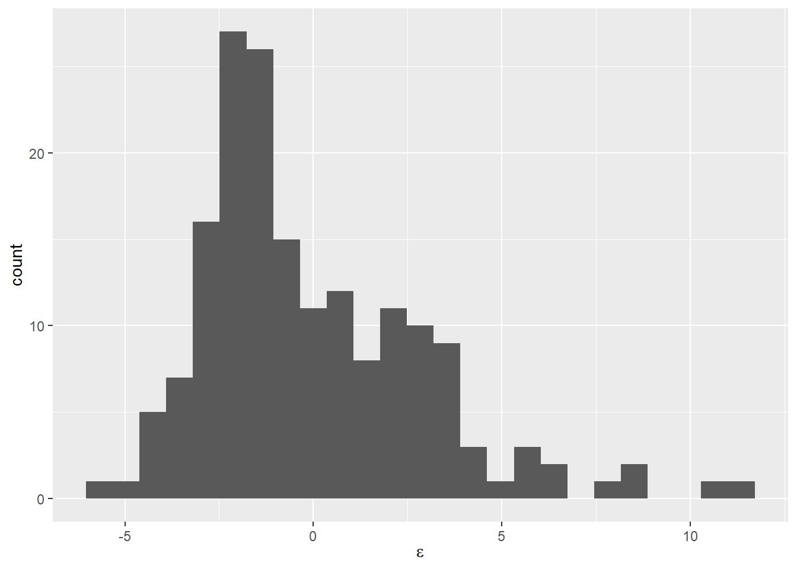
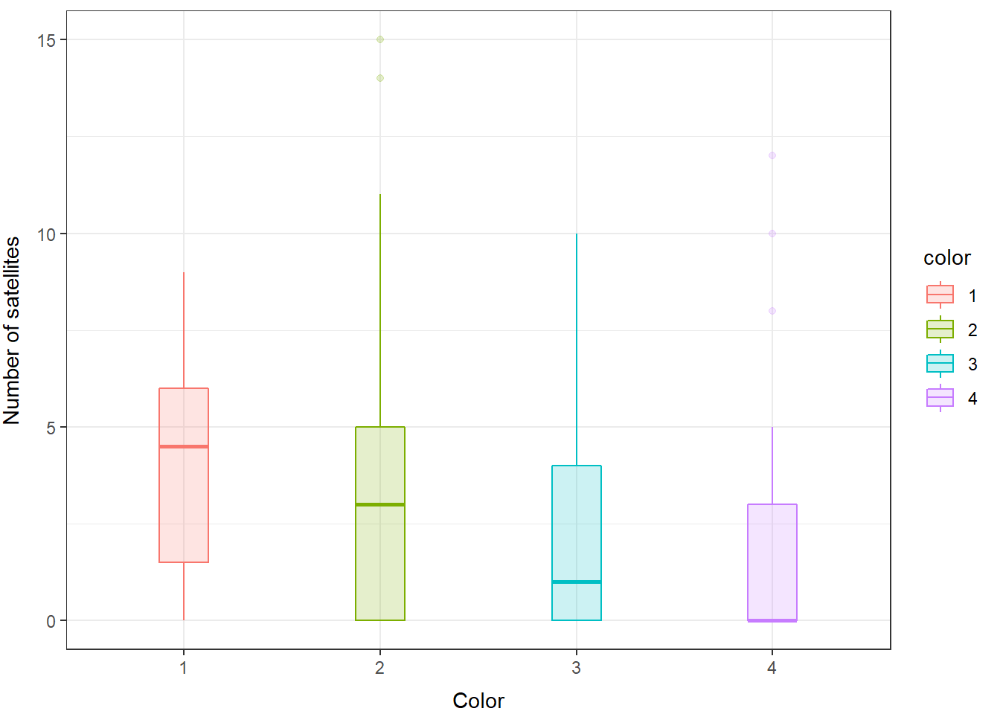

17.2 Binary (logistic) regression
Here, we will duplicate the analysis from Chapter 12 using a Bayesian framework with the rstanarm package. We’ll note some differences and some similarities as we go along.
Read in the data file.
Look at the first few rows of data:
## path year hatchery length mass date flow
## 1 0 2010 1 176 57 118 345
## 2 0 2005 1 205 101 128 1093
## 3 0 2010 1 180 56 118 345
## 4 0 2010 1 193 74 118 345
## 5 0 2005 1 189 76 128 1093
## 6 0 2010 1 180 65 118 34517.2.1 Data Explanation
The full data explanation is provided in Chapter 12.4 and will not be repeat it here. Go check it out if you need a reminder of what data are in there.
17.2.2 Data analysis
We are going to use the 1/0 binary data to estimate the effects of a number of covariates of interest on the probability that an individual fish used the Stillwater Branch for migration in each year of this study using logistic regression.
If our response, path is a binary variable where 1 = Stillwater and 0 = mainstem for each fish 1 to n, we can think of p(Stillwater Branch) as:
\[p(Stillwater) = \frac{\sum{path}}{n}\]
and the logit of p(Stillwater Branch) can assumed to be normally distributed with a mean of .
\[logit(p) = Normal(\mu, \sigma^{2})\]
Now that we know we are doing more or less the same thing as we were for linear models, let’s move on with fitting the model.
First, since we are interested in the fixed effects of year, and not the linear trend through time, we need to convert year to factor.
Now, if we want to test hypotheses about the influences of explanatory variables on the probability of using the Stillwater Branch, we could make models to represent those hypotheses. For example, if we wanted to test whether flow had a significant influence on path across years, then we could build a model that looks like this:
We could make another model that investigates effects of length on path choice instead of flow:
Or a model that includes both with an annoying name:
flow_len_mod <- stan_glm(path ~ year + flow + length,
family = binomial(link = "logit"),
data = choice)We could look at these individually to determine variable-level significance using approaches demonstrated in Chapter 16.9.
First, let’s define a slightly more complex set of models based on a priori combinations of explanatory variables. Note that this is pretty much identical to how we do this for models fit with glm() except now we are using stan_glm() to fit the models!
# Make an empty list to hold the models
mods <- list()
# Now, add models to the list. Stop and think about what each one means.
mods[[1]] <- stan_glm(path ~ year + hatchery + length + flow, family = binomial, data = choice)
mods[[2]] <- stan_glm(path ~ year + flow, family = binomial, data = choice)
mods[[3]] <- stan_glm(path ~ year + hatchery, family = binomial, data = choice)
mods[[4]] <- stan_glm(path ~ year + length, family = binomial, data = choice)
mods[[5]] <- stan_glm(path ~ year + length + hatchery, family = binomial, data = choice)
mods[[6]] <- stan_glm(path ~ year + length + flow, family = binomial, data = choice)
mods[[7]] <- stan_glm(path ~ year + hatchery + flow, family = binomial, data = choice)Next, give the models some names using the formulas for each of the models. Remember: models are stored as list objects in R, and each of those list objects (models) has names. We can reference those names using the $ notation, and from there we can access the actual model formula. The third element of this formula object contains the explanatory variables!! Just like glm(). Whoa!
We can extract the formula for each model (which is an element in the mods list) using a for loop to assign them one at a time. Here, we are assigning the ith formula to be the name of the ith element in the list mods. Nifty. Note that this is pretty much identical to how we do this for models fit with glm()!
# Assign the formula for each of the models as the name
for (i in 1:length(mods)) {
names(mods)[i] <- as.character(mods[[i]]$formula)[3]
}Now, we use the loo package to make a model selection table like we did in Chapter 16.8:
# Load the library
library(loo)
# Extract the log-likelihood matrices
log_liks <- lapply(mods, log_lik)
# Now apply the loo() function to each
# model to get elpd_loo
loos <- lapply(log_liks, loo)
# Finally, we can compare them with loo_compare()
mod_table <- loo_compare(loos)Nice.
17.2.3 Interpreting the results
This proceeds the same way for GLM as it does for linear models until we get to making predictions of the response based on our best model.
Our model selection table is an object in R (right?), and we can reference that object using $ notation, matrix notation [ , ], or by calling rownames() to get the name for each of the models. Let’s use this approach to get the best model from our candidate set.
## elpd_diff se_diff
## year + flow 0.0 0.0
## year + hatchery + flow -0.1 1.4
## year + length + flow -0.5 1.2
## year + hatchery + length + flow -1.0 1.5
## year + hatchery -2.3 3.0
## year + length -3.0 2.9
## year + length + hatchery -3.2 3.0## 'compare.loo' num [1:7, 1:8] 0 -0.144 -0.534 -1.039 -2.324 ...
## - attr(*, "dimnames")=List of 2
## ..$ : chr [1:7] "year + flow" "year + hatchery + flow" "year + length + flow" "year + hatchery + length + flow" ...
## ..$ : chr [1:8] "elpd_diff" "se_diff" "elpd_loo" "se_elpd_loo" ...Look at the rownames of the table. These rownames are the index for each of our models as they appear in the mods object, and we can use the index to reference objects inside of the mods list…
## [1] "year + flow" "year + hatchery + flow"
## [3] "year + length + flow" "year + hatchery + length + flow"
## [5] "year + hatchery" "year + length"
## [7] "year + length + hatchery"The rowname for the best model (the one at the top of the table) is year + flow. Print the model to see it as follows. Notice the back-ticks (``) around the model name to deal with spaces.
##
## Model Info:
## function: stan_glm
## family: binomial [logit]
## formula: path ~ year + flow
## algorithm: sampling
## sample: 4000 (posterior sample size)
## priors: see help('prior_summary')
## observations: 759
## predictors: 7
##
## Estimates:
## mean sd 10% 50% 90%
## (Intercept) -2.985 0.794 -4.016 -2.960 -2.003
## year2006 -0.500 0.618 -1.291 -0.504 0.295
## year2009 0.285 0.456 -0.292 0.276 0.870
## year2010 -0.004 0.642 -0.814 -0.020 0.821
## year2011 -0.790 0.407 -1.310 -0.781 -0.279
## year2012 -0.762 0.522 -1.443 -0.753 -0.090
## flow 0.002 0.001 0.001 0.002 0.002
##
## Fit Diagnostics:
## mean sd 10% 50% 90%
## mean_PPD 0.128 0.016 0.108 0.128 0.149
##
## The mean_ppd is the sample average posterior predictive distribution of the outcome variable (for details see help('summary.stanreg')).
##
## MCMC diagnostics
## mcse Rhat n_eff
## (Intercept) 0.023 1.003 1198
## year2006 0.017 1.001 1383
## year2009 0.013 1.002 1302
## year2010 0.018 1.002 1223
## year2011 0.010 1.000 1699
## year2012 0.014 1.000 1454
## flow 0.000 1.003 1523
## mean_PPD 0.000 1.000 3569
## log-posterior 0.050 1.003 1390
##
## For each parameter, mcse is Monte Carlo standard error, n_eff is a crude measure of effective sample size, and Rhat is the potential scale reduction factor on split chains (at convergence Rhat=1).Great! Let’s save this to an object so we can work with it a little easier.
We can get an understanding of the explanatory power of our model using a Bayesian R2 (described by Gelman et al. 2018). By default, this function will return one estimate of the R2 for each iteration of the model, so we should get 4,000 estimates of R2 here.
## [1] 0.050023Meh, about average for an ecological study, but that doesn’t mean it is good. What we are really after here is just a good idea of what proportion of fish use this route and whether it can be reasonably well related to discharge, so we’ll keep pressing along to see if we have that.
Let’s wrap our interpretation of results by looking at coefficient estimates as indicators of statistical significance.
First, we could extract just the parameters for ease:
The coeffs object is now a dataframe with 4,000 posterior samples (rows) of each model coefficient (columns).
Then, we can determine whether zero or any other value of interest is included within the credible range of values for each of these coefficients. If zero falls outside the credible range for any of the parameters, we can conclude that the effect was significant. For categorical variables, this means groups are different. For continuous explanatory variables, it means that the slope is different from zero (flat).
Pivot the coefficients into long form first so they are grouped for plotting, and then we’ll summarize the posteriors.
coeffs_stacked <- coeffs %>%
pivot_longer(cols = everything(),
names_to = "coeff",
values_to = "val"
) %>%
group_by(coeff)You can calculate means and 95% Credible intervals for plotting:
post_summary <- coeffs_stacked %>%
summarize(
fit = mean(val),
lwr = quantile(val, 0.025),
upr = quantile(val, 0.975)
)We can plot these really easily to see whether any of the parameters overlap zero:
ggplot(post_summary, aes(x = coeff, y = fit, color = coeff, fill = coeff)) +
geom_point(size = 2) +
geom_segment(aes(xend = coeff, y = lwr, yend = upr), lwd=1)You can get a similar plot using the built-in plot() method for the fitted model object a lot more easily like so. By default, this method plots 95% high density (credible) intervals for each of the posteriors.

17.2.3.1 Categorical effects
Regardless of the method we use, we see there is a lot of variability between years and there is reasonable support to suggest that this variability is significant. How can we tell this? We don’t have access to p-values like we do in MLE or OLS anymore because of how the likelihood is expressed in these models. Instead, we can do group-wise comparisons to determine specific differences but this becomes cumbersome when we have many levels.
Remember, that the null hypothesis for factors under an ANOVA- or ANCOVA-like analysis is just that any two group means differ. In this case, it looks like 2011 and 2009 are the most different since 2011 has lower probability of using Stillwater Branch than 2005 (Intercept) and 2009 is greater.
If we want to compare year-specific means, we’ll need to make predictions on the logit scale and then convert to the real scale where we can actually derive the difference between years arithmetically for the entire posteriors.
Make predictions from the model on the logit scale, and convert to the real scale using the invlogit() function from the rstanarm package:
p_stillwater_2009 <- invlogit(
coeffs$X.Intercept. + coeffs$year2009 + coeffs$flow * mean(choice$flow))
p_stillwater_2011 <- invlogit(
coeffs$X.Intercept. + coeffs$year2011 + coeffs$flow * mean(choice$flow))And now you can calculate the difference (note that this is for the average flow).
If we are interested in whether the true difference is equal to zero (null) then we can calculate quantiles:
## 2.5% 97.5%
## 0.0329588 0.1875154In this case, there is at least a 95% chance that the probability of smolts using the Stillwater Branch varies between 2009 and 2011, so we can conclude that the effect is significant at \(\alpha\) = 0.05.
We can also plot a histogram of the differences really easily now that it is just a vector in R:
ggplot() +
geom_histogram(aes(x = difference), binwidth = 0.01) +
xlab("Difference in p(Stillwater) between 2009 and 2011") +
ylab("Count") +
scale_y_continuous(limits = c(0, 450), expand = c(0, 0)) +
theme_bw() +
theme(
axis.title.x = element_text(vjust = -1),
axis.title.y = element_text(vjust = 3),
)
17.2.4 Continuous effects
Interpreting significance and direction of continuous effects is a little more straightforward. In this case, we just need to determine whether the posterior estimate of the coefficient for continuous explanatory variables differs from zero or another value of interest.
## 2.5% 97.5%
## 0.0005093474 0.0029282942It was really hard to see in the coefficients plot due to differences in scale, so we can make a histogram of this one to visualize that difference as well.
17.2.5 Making predictions
The first thing to remember here is that we have used a link function to estimate this model, so we cannot use the same method as we did for linear models to make predictions about our response from the model coefficients.
The second thing to remember here is that by definition we have used an invertible link function to estimate this model so the previous statement is a lie and we actually can use the same method as before to make predictions about our response from the model coefficients. We just need to add an extra step so that we can invert our predictions about the expected value of Y with respect to X.
Confused? Yeah, it’s a little confusing. As always an example always goes a long way…
We can make predictions from our best model pretty much the same way we did in Chapter 12.4.4.
# Make predictions from the best model
logit_preds <- data.frame( predict(best_mod, type = "link", se.fit = TRUE) )
# Calculate confidence intervals as 1.96 * standard error
logit_preds$lwr <- logit_preds$fit + 1.96 * logit_preds$se.fit
logit_preds$upr <- logit_preds$fit - 1.96 * logit_preds$se.fit
# Invert the link function
real_preds <- apply(logit_preds, 2, invlogit)
# Combine the predictions with the original data
choice_preds <- data.frame(choice, real_preds)Go ahead and have a look at the logit_preds and real_preds objects to make sure you understand what we just did.
Now, we can finish by plotting our predictions:
ggplot(choice_preds, aes(x = flow, y = fit, fill = year)) +
geom_ribbon(aes(ymin = lwr, ymax = upr, fill = year), alpha = 0.25) +
geom_line(aes(color = year)) +
xlab(expression(paste("Flow ( ", m^3, "\u00b7", s^-1, ")"))) +
theme_bw() +
theme(panel.grid = element_blank())
You can see that, in general, there is a relatively low probability of an individual fish using the Stillwater Branch, but we see increasing probability of using that route with increasing flow across years.